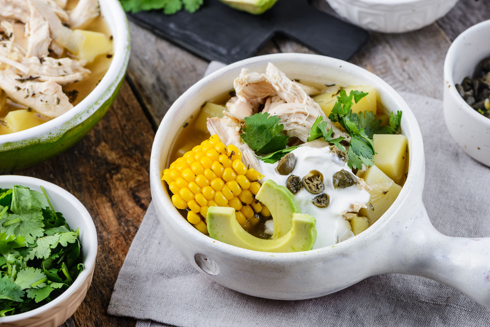

Ajiaco

Description
What a delicious memory! At home, the word ajiaco (potato and chicken stew) was always a accompanie by a party, friends, cousins and uncles coming over; and with lots, and lots of flavor. From the very first moment the pot was placed on the stove, the majestic aroma of the gallant soldier weeds, the indispensable ingredient needed to prepare a delicious Colombian Ajiaco, would fill the house. Ajiaco is one of the staples of traditional Colombian cuisine; it's also the famous weekend soup. However, it is customary to prepare large portions of this soup for family gatherings and different occasions. Here I invite you to delight yourself by making this delicious recipe. Enjoy it with your family!
Ingredients
- 8 cups water
- 4 medium skinless and boneless chicken breast
- 1 cup dry gallant soldier weeds (Colombian plant)
- 1 1/2 pounds capira potatoes (white potatoes)
- 1 1/2 pounds nevada potatoes (white potatoes)
- 1 1/2 pounds criolla potatoes (Yukon gold)
- 1 chopped medium onion
- 2 garlic cloves
- 4 large ears of corn
- 1 chicken bouillon cube
- 1/2 cup green peas
- Capes
- Heavy cream
- Salt to taste
Steps
- In a large pot, add water, chicken and half of the gallant soldier weeds. Let simmer for approximately 40 minutes. Once the chicken is cooked, place on plate, cut in small chunks, and cover with aluminium foil to keep the chicken warm. Do not toss the water.
- Then, in the same water you cooked the chicken, add the three kinds of potatoes, onion and garlic, Let cook for approximately 2 hours for potatoes to dissolve completely.
- Add the chicken chunks, ears of corn, chicken broth, green peas and salt to taste. Mix carefully with all the ingredients, and let simmer for another hour over low heat.
- Add the other half of the gallant soldiers weeds and cook for 5 more minutes.